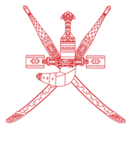
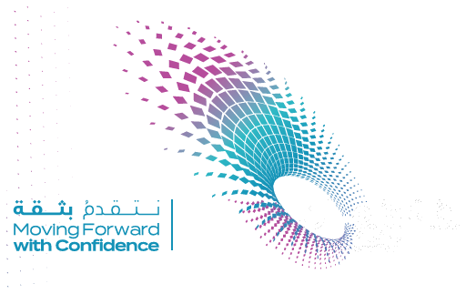

بوابة ولي الأمر
إرسال الاستفسارات، ومتابعة طلبات الأبناء، وتلقّي إشعارات الإدارة لحظة صدورها.
- استفسار أكاديمي
- الغياب والاستئذان
- متابعة الأبناء
- تحديد الصف والشعبة (اختياري)
نظام تواصل رقمي واحد يربط أولياء الأمور والطلبة بإدارة المدرسة، عبر طلبات تُفرز آليًا إلى القسم المختص وإشعارات لحظية عند كل رد.

رؤية عُمان 2040 التعليم الرقمي ركيزة المستقبلتواصل موثّق ومحفوظ، وإشعارات فورية عند رد الإدارة
كل بوابة لها صلاحياتها داخل النظام، والطلب الواحد يجمع الرسائل والردود في مكان واحد.

إرسال الاستفسارات، ومتابعة طلبات الأبناء، وتلقّي إشعارات الإدارة لحظة صدورها.
لطلبة الصفوف ١٠ إلى ١٢: اختر صفك ثم شعبةك ثم اسمك، واطرح استفسارك — يسجّل الروبوت طلبًا باسمك وبرقم مرجعي ويحوّله للقسم المختص.
استقبال الطلبات المفروزة، والرد على المحادثات، وتحديث حالة الطلب حتى الإغلاق.
أربع خطوات فقط من أول رسالة حتى إغلاق الطلب.
يرسل ولي الأمر أو الطالب أول رسالة، فيرد الروبوت آليًا بالترحيب وتسجيل طلب تواصل وعرض أزرار الخدمة الخاصة ببوابته: خمسة طلبات لأولياء الأمور وستة للطلبة.
بالضغط على زر القسم (أو كتابة رقمه) ينتقل الحديث مباشرة إلى القسم المختص ويُولَّد رقم مرجعي للطلب بحالة مفتوحة.
عند كتابة الاستفسار والضغط على «إرسال» يظهر إشعار داخلي برقم الطلب، ويصل إشعار فوري عند كل رد من الإدارة.
ترد الإدارة فتتحوّل حالة الطلب إلى قيد المعالجة، ثم إلى مغلق بعد حل الاستفسار.
أرقام محدَّثة لحظيًا من قاعدة الطلبات.
احتفظ برقم الطلب الذي يظهر لك بعد الإرسال (مثال: #TK-1045)، مع رقم جوالك المسجَّل — الاثنان معًا يفتحان محادثتك دون أن يرى أحد بياناتك.